NIKE

BRIEF
The brief was to come up with a campaign for Nike for the Rio Olympics 2016.
RESEARCH & SOLUTION
In our research we found out that from being titled one of the most dangerous cities, the city Rio has come a long way and now is in the middle of a growing path made of different steps and on the other hand Nike is inviting it’s consumers to believe anybody can be successful by being perseverant. We combined together these two values to convey that any goal could be reached step by step. That’s the reason we named our campaign #OneStepCloser. Our campaign targets common people, thus we decided that our touch points will be places in city.
CLIENT / SCHOOL / COURSE / ROLE
Nike / SPD / Integrated Communication (Group Project) / Concept & Design
TYPE - Mobile Application, Communication
#OneStepCloser Web Ad
Web Ad Promotion

#OneStepCloser Manifesto
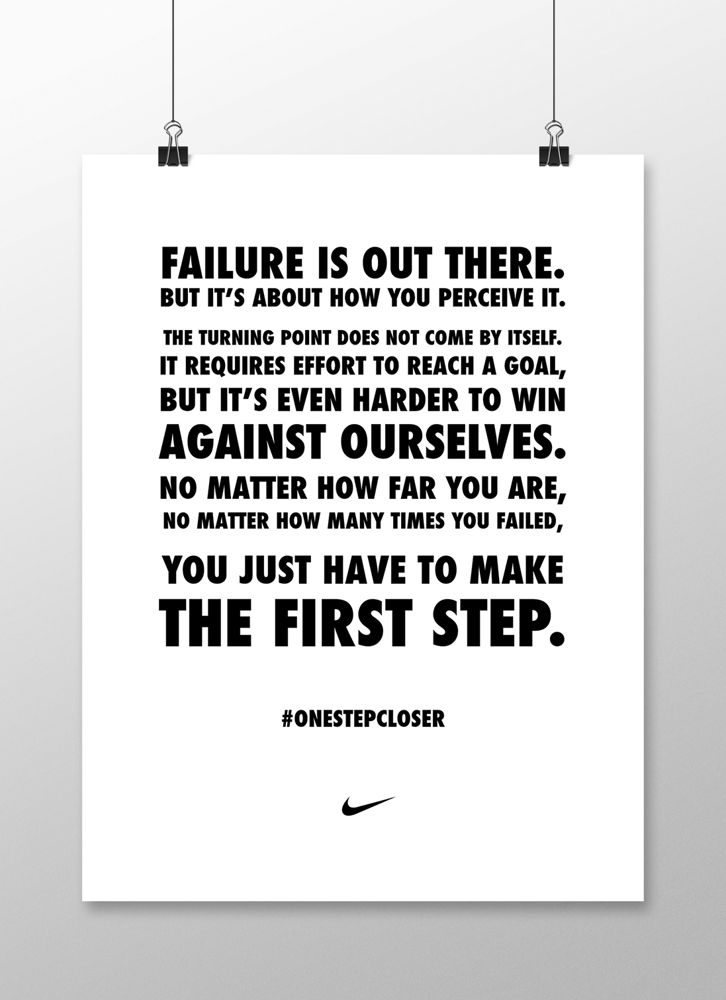#OneStepCloser Marathon
A race against oneself. A marathon will open the campaign launching the app.
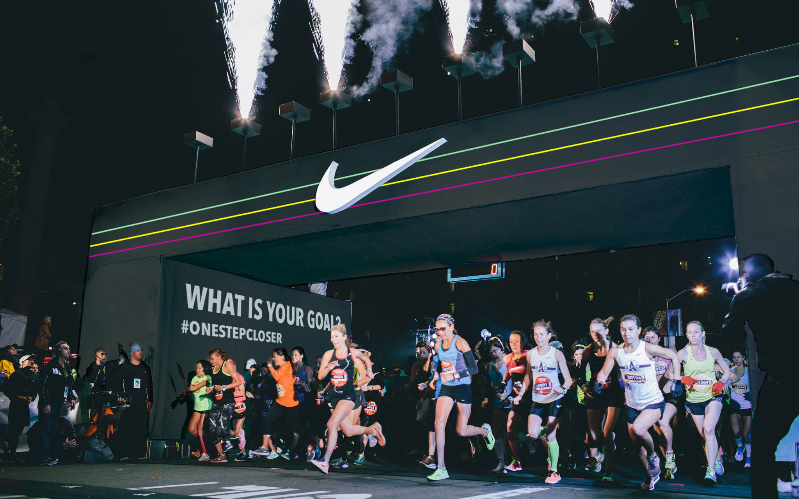#OneStepCloser App
The app is the core of the campaign. The user has to choose a goal that has to be reached by the end of the Olympics. The goals are not linked with just sports but also with lifestyle trackable activities that can improve the quality of the life of the users. Once the target is set, the app will start pushing and motivating people to reach their goal. It will send motivational quotes and also show other people that are part of the OneStepCloser community. The user can see his progresses on the main screens, have a countdown to the end of the Olympic games and see the network of OSC people.
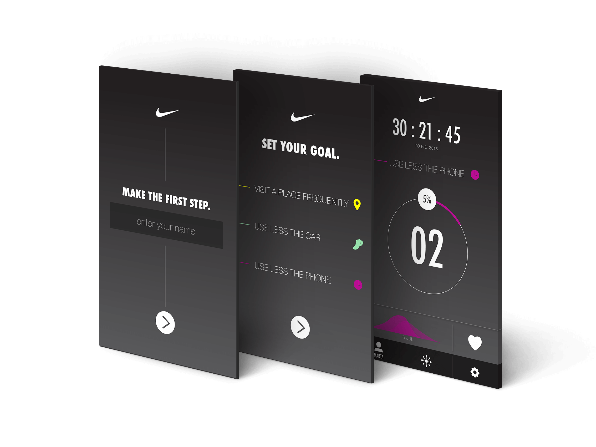Once the goal is reached the front camera will open and it will have a label congratulating for the accomplishment. After that the App will automatically un-install.
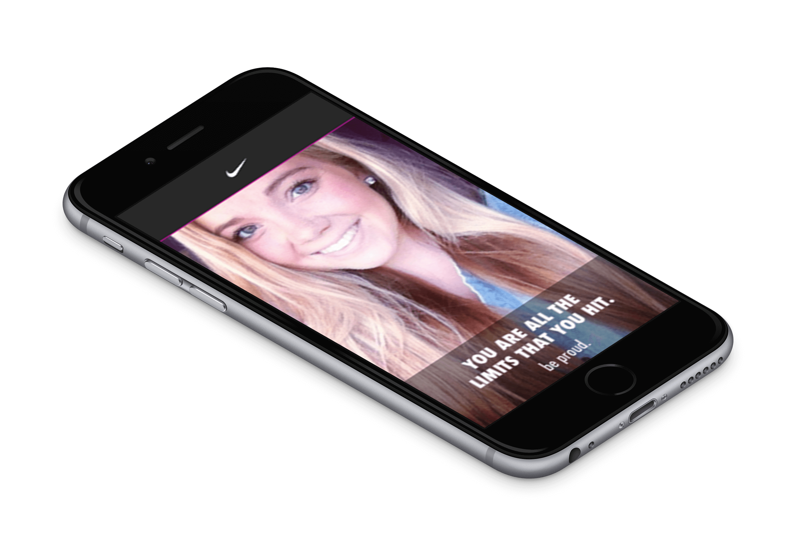App Prototype
Winner Spot
An interactive experience where the web video will be projected in places around the city. When a person passes by, through kinect the video starts playing and when the user stops to see, a call to action will ask to “MOVE ONE STEP CLOSER” and when they do, the video shows the change. In the end it invites to download the app.
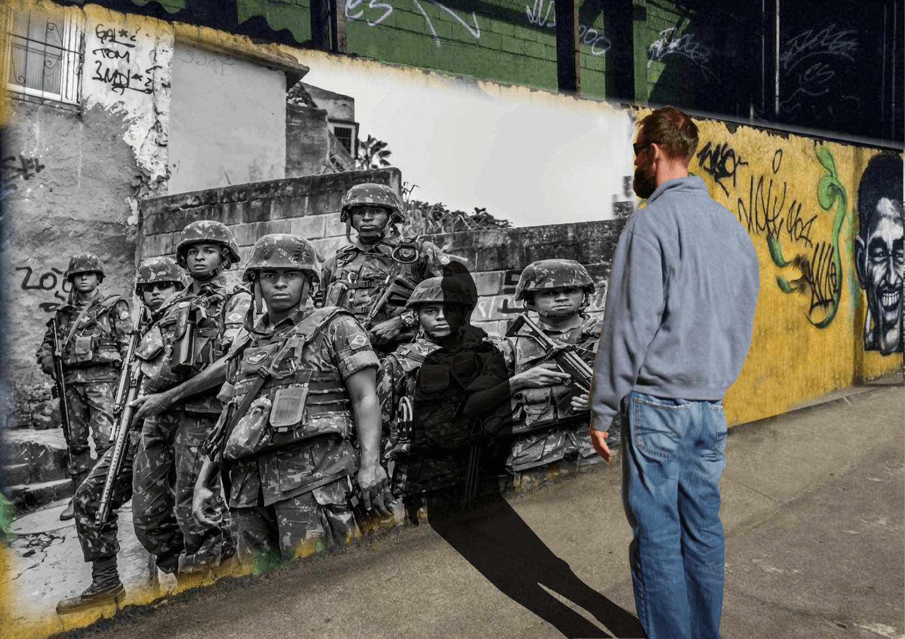Walks of Fame
We decided to use every small element around the city that relates to our campaign. Some zebra crossing’s will have #OSC manifesto painted on it and some stairs will be painted with inspirational quotes by famous athletes.
With this we are trying to imply that "Each step you make counts" and in a way we want to motivate them in every step in reaching their goal.
The Goal Tower
The Goal tower will be placed in Copacabana and also in various places around the world. It will allow people to write their goals on it. This in a way will engage people who already know their goals and also encourage other people to set their goals.
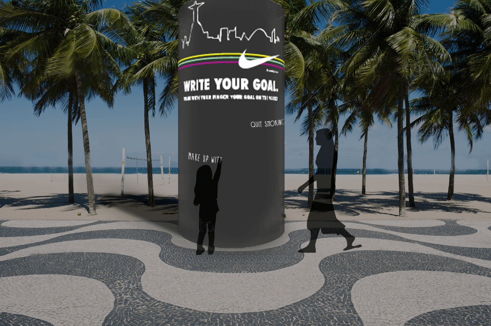Motivational Paths
The nike’s core value stickers (shaped as the Copacabana floor) will be placed in various locations in Rio and all around the world like in gyms and universities to evoke the people to push harder and never give up on their goals.
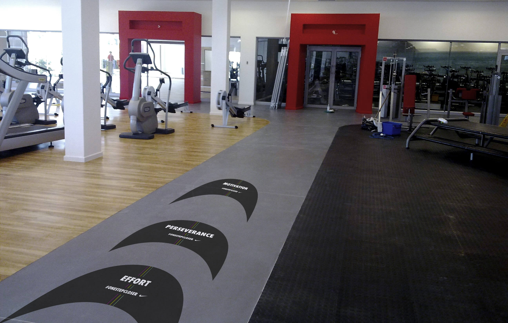 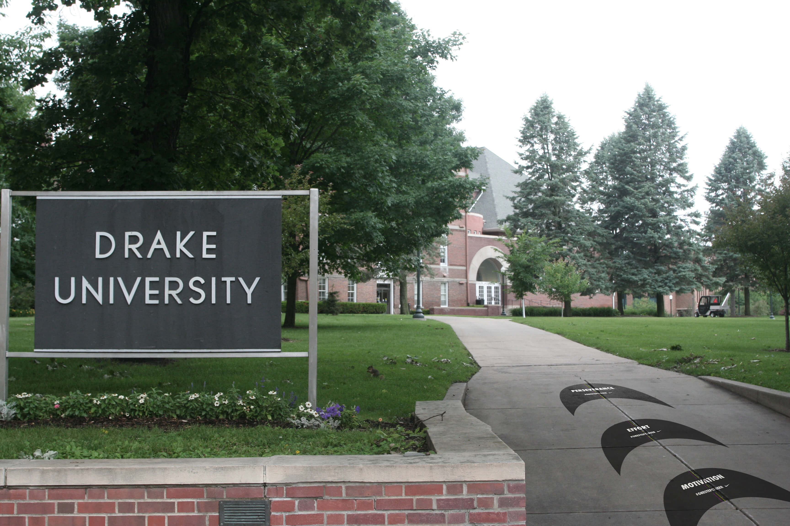Celebrity Testimonials
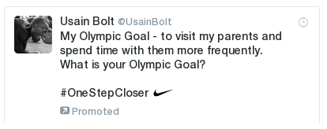Second Marathon
At the end of the Olympic Games a second marathon will count the progresses of the participants and those who will beat their first marathon's time will receive the #onestepcloser t-shirt.
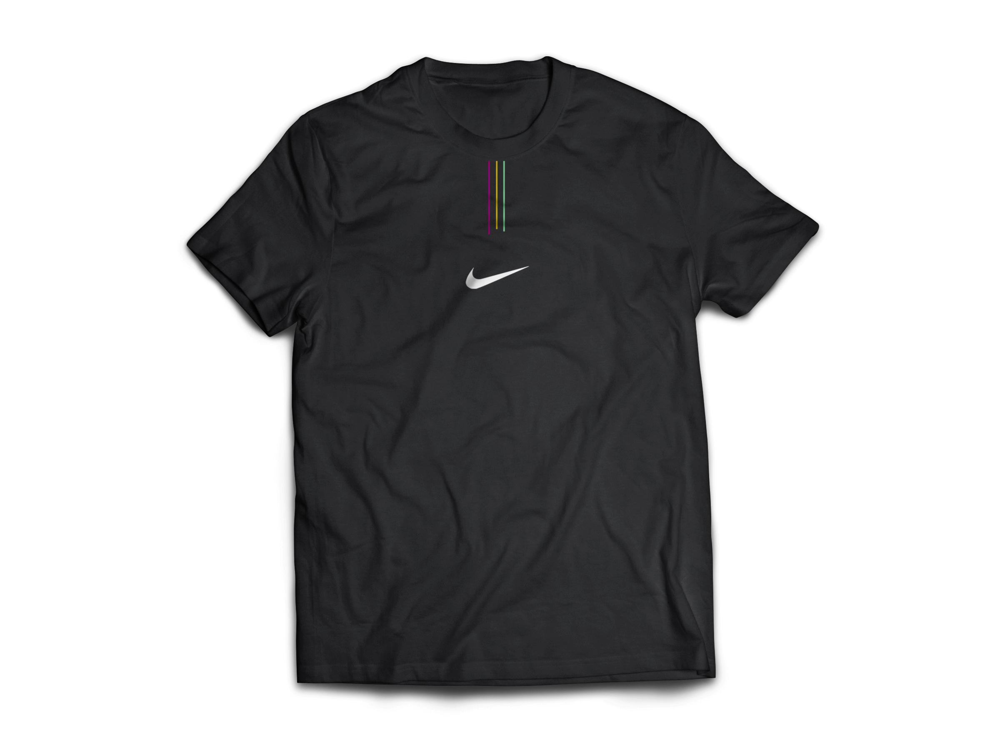 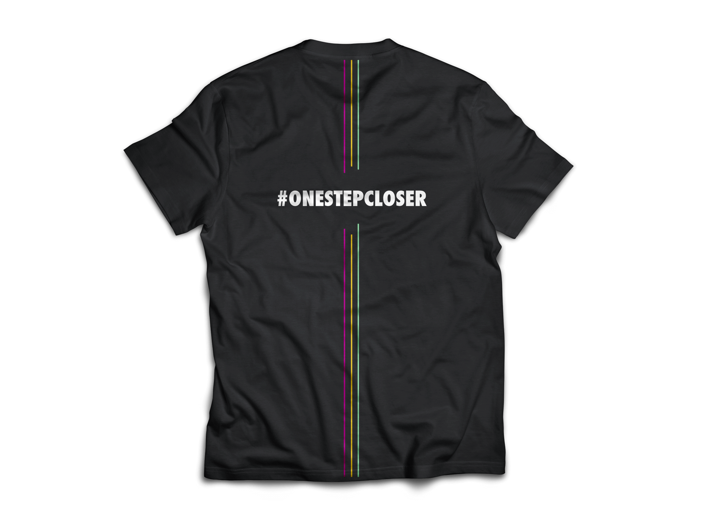